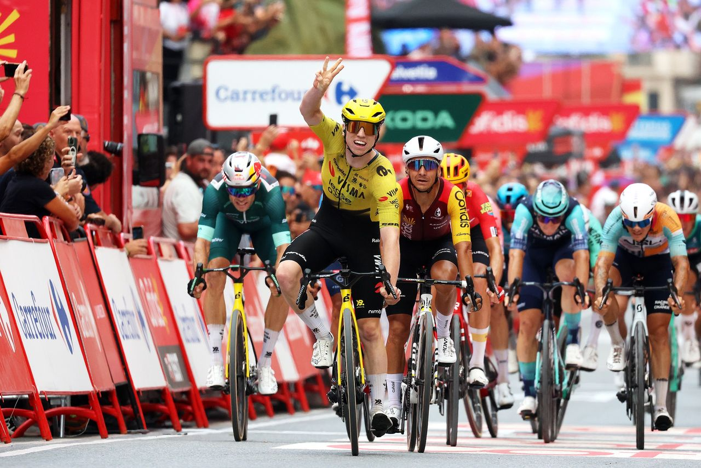
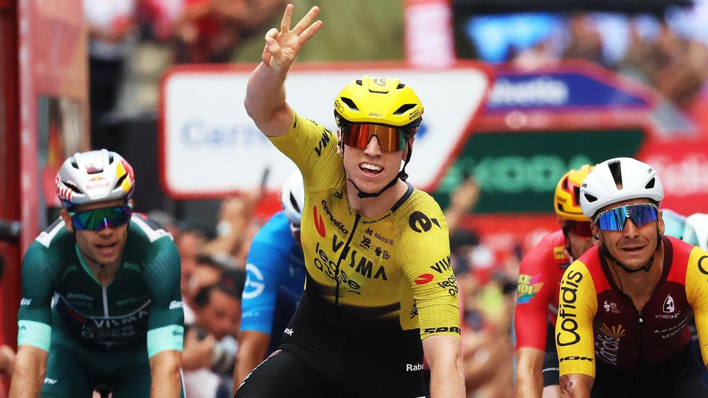

Facts
Stage 11, Wed 2 Sep: Cartagena → Lorca, 153.8 km, mostly flat (~1,350 m), Alto de Aledo cat. 3 with ~30 km to go. Winner Matthew Brennan (Visma–Lease a Bike) 3:17:18. 2. Bryan Coquard s.t. 3. Jordi Meeus s.t. 4. Magnus Cort s.t. 5. Wout van Aert s.t.
Red Mas 35:59:02. Roglič +1:18. Gall +1:39. Onley +2:20 (white). Carapaz +3:26. Green van Aert (extended). Polka Buitrago. Team Decathlon CMA CGM. Mads Pedersen DNS (illness). Crash: Vermaerke and McKenzie ~39 km out; both remounted. Tomorrow Stage 12, Thu 3 Sep: Vera → Calar Alto, 166.6 km, five categorised climbs, double Velefique, summit finish.
Tale of the tape
After Elche’s chaos, Visma wrote the day like a memo. Break never got past ~1:40. Wind briefly split the bunch around 93 km to go; closed. Hayter and Warbasse tried again; van Aert mopped the intermediate and led over Aledo. Inside 10 km the yellow train held the front. Uno-X nipped in late. Brennan still kicked clear with ~150 m left, three fingers up before the line cooled.
Third stage of his debut Grand Tour. Last rider to do that first GT hat-trick was Pogačar at the 2019 Vuelta. Coquard second again. Green padded. Red untouched. Tonight’s mountain is the real exam.

Three fingers. Third win. Debut Grand Tour.
3 Sep 2026
Stage 11, Wed 2 Sep: Cartagena → Lorca, 153.8 km. Brennan 3:17:18. Coquard, Meeus, Cort, van Aert same time. Same feat Pogačar pulled in his first Vuelta in 2019. The kid is not waiting his turn.
Open the piece

Yesterday’s mess, today’s memo
3 Sep 2026
Wind split, Hayter again, Aledo, a crash at 39 to go — and still Visma closed every door. Laporte and van Aert held the front into Lorca. Brennan finished the sentence. Green grows. Red sleeps one more night.
Open the piece

Calar Alto is the plot twist
3 Sep 2026
Mas 35:59:02. Roglič +1:18. Gall +1:39. Onley white at +2:20. Pedersen out sick. Today Vera → Calar Alto, 166.6 km, five climbs, double Velefique, summit. Red finally has to race.
Open the piece